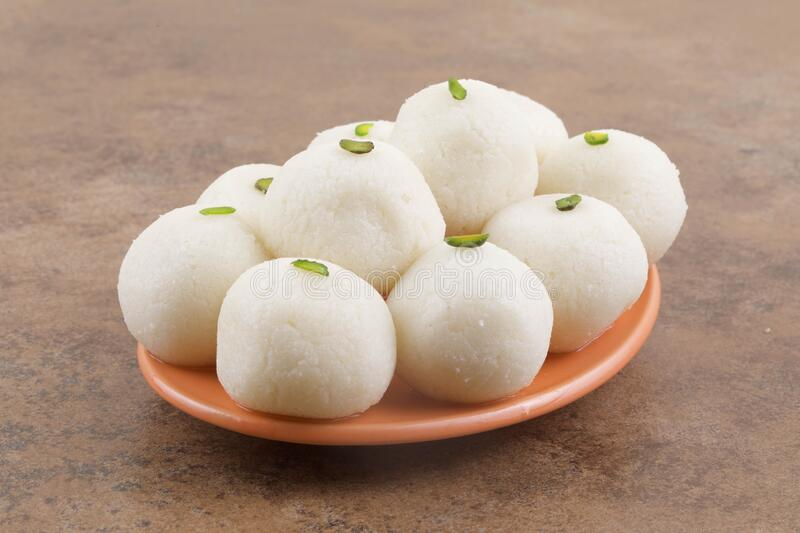

This traditional Indian dessert is made with different types of flour that are mixed with sugar and
shortening, then shaped into balls. Like many other dishes in India, laddu appears in numerous
varieties and is created with a myriad of different ingredients. Tiny laddu balls can be made with
various types of legume flour, most commonly chickpea flour, wheat
flour, and even coconut flakes. Dried fruits or nuts are often incorporated to provide sweetness and
modify the flavor. This old Indian confectionery was primarily created with flour and jaggery.
RASGULLA

This traditional Indian dessert is made with different types of flour that are mixed with sugar and
shortening, then shaped into balls. Like many other dishes in India, laddu appears in numerous
varieties and is created with a myriad of different ingredients.
Tiny laddu balls can be made with various types of legume flour, most commonly chickpea flour, wheat
flour, and even coconut flakes. Dried fruits or nuts are often incorporated to provide sweetness and
modify the flavor. This old Indian confectionery was primarily created with flour and jaggery.
MASALA DOSA
A traditional southern Indian dish known as masala dosa is popular throughout the country, made
from a batter of soaked rice and lentils that is baked into a thin pancake and usually stuffed
with potatoes, onions, and mustard seeds. The dish is often garnished with grated coconut and
chopped coriander.
With its huge popularity, there are also some variations of the dish, such as mysore masala
dosa, rava masala dosa, onion masala dosa, and paper masala dosa. It is usually consumed as a
quick snack or as a part of any meal of the day.
PALAK PANEER
Palak paneer is a popular Indian vegetarian dish made with paneer cheese in a rich, thick sauce
consisting of puréed spinach mixed with tomatoes, garam masala, garlic, and numerous spices. The
key ingredients are even mentioned in the name of the dish, since palak means spinach in hindi,
and paneer refers to the cheese.
Palak paneer has roots in the Punjabi region, but there are also other variations of the dish
throughout India. It is a highly nutritious meal that can be consumed either for breakfast,
lunch, or dinner, accompanied by rice or Indian flatbreads such as naan and roti.
PAV BHAJI
Pav bhaji is a popular street snack originating from the Indian state of Maharashtra. It
consists of a vegetable curry that is typically served with a soft bread roll known as pav. The
dish was invented in the 1850s as a midnight meal by street vendors who prepared it with all the
leftover vegetables from the day, which were then mashed and combined with spices and ghee
butter.
Originally, it was a quick and easy meal for Mumbai's textile mill workers, but today it is a
favorite street snack that is also served in some restaurants in Mumbai. There are a lot of
varieties.
DAL MAKHANI
Although it originated in Punjab, dal makhani has become one of the most popular Indian lentil
dishes, both in the country and outside of its borders. It consists of red kidney beans and
whole black lentils, which also go under the name urad.
The dish is prepared with hefty amounts of ghee and various seasonings such as ginger garlic
paste and chili, and it is slowly cooked in a rich, tomato-based sauce. The name makhani,
meaning butter, stems from the last addition, a drizzle of melted ghee or butter that provides
the typical velvety flavor of this classic.